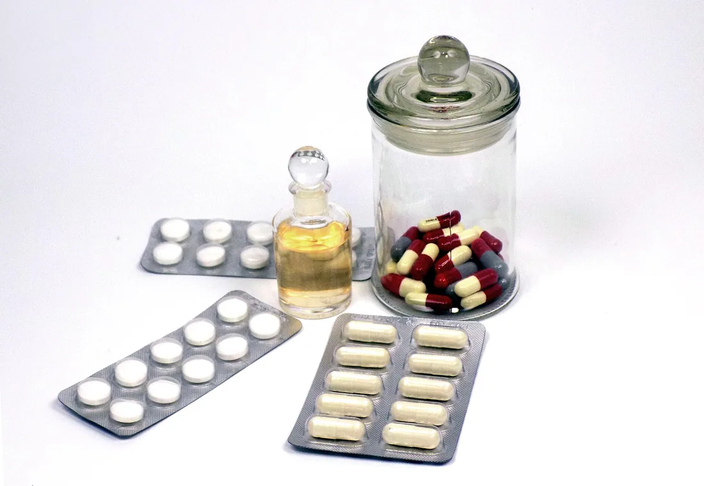

Ekspresowy transport leków i artykułów medycznych
Brakującego leku nie dowozi się jutro. Odbieramy przesyłkę i wieziemy ją jednym kursem — bez sortowni, bez magazynu pośredniego, bez przeładunku. Dla aptek, przychodni, laboratoriów i hurtowni, na terenie całej Polski.

Co przewozimy
- Leki — braki na receptę, leki z importu docelowego, przesunięcia międzyapteczne, zamówienia z hurtowni
- Produkty zimnego łańcucha — szczepionki, insuliny, preparaty wymagające 2–8 °C
- Próbki i materiał biologiczny — przewóz do laboratorium, w opakowaniu przygotowanym przez zleceniodawcę
- Sprzęt i wyroby medyczne — części do aparatury, wyposażenie gabinetów, sprzęt jednorazowy
- Dokumentacja medyczna — przewóz za potwierdzeniem odbioru
Nie przewozimy przesyłek, których zleceniodawca nie przygotował zgodnie ze swoją procedurą — opakowanie, oznakowanie i dokument przewozowy są po Waszej stronie, my odpowiadamy za warunki i termin.
Dostawa tego samego dnia — jak to działa
Nie obiecujemy „ekspresu” bez wyjaśnienia, na czym polega. Mechanizm jest prosty i dlatego działa: jeden kierowca, jeden kurs, żadnego przeładunku. Przesyłka nie trafia do sortowni i nie czeka na inne paczki.
- Zgłoszenie — telefonicznie albo mailem: co, skąd, dokąd, w jakiej temperaturze, do kiedy musi być na miejscu.
- Potwierdzenie — oddzwaniamy z godziną odbioru i godziną dostawy. Jeżeli nie zdążymy tego samego dnia, mówimy to od razu, a nie po fakcie.
- Odbiór — pod wskazanym adresem, od osoby wskazanej w zleceniu.
- Przewóz — bez przeładunku, z rejestracją temperatury przez całą trasę, jeżeli przesyłka tego wymaga.
- Przekazanie — osobie upoważnionej, za podpisem, z natychmiastowym potwierdzeniem do zleceniodawcy.
Trasy do stu kilometrów od miejsca odbioru realizujemy nawet tego samego dnia — mapa z promieniem pokazuje, jak to wygląda dla konkretnych miast. Dalej jedziemy kursem dedykowanym, a godzinę dostawy potwierdza dyspozytor przy przyjęciu zlecenia.
Zakresy temperatur i jak je utrzymujemy
Produkty wrażliwe wieziemy w opakowaniach pasywnych dobranych do zakresu i czasu przewozu, z rejestratorem temperatury dołączonym do przesyłki.
- 2–8 °C — zimny łańcuch: szczepionki, insuliny, preparaty biologiczne
- 8–15 °C — zakres chłodny
- 15–25 °C — kontrolowana temperatura pokojowa, najczęstszy zakres dla leków suchych
Przy każdej przesyłce w kontrolowanej temperaturze zleceniodawca dostaje zapis przebiegu temperatury — to jest dokument, który pokazuje się przy kontroli farmaceutycznej. Przy odstępstwie od zakresu zgłaszamy je natychmiast, a przesyłkę zostawiamy do decyzji zleceniodawcy, zamiast dostarczać ją „na wszelki wypadek”.
Dokumentacja przewozu
- Protokół przekazania — kto wydał, kto odebrał, o której godzinie
- Zapis temperatury dla przesyłek w kontrolowanym zakresie
- Potwierdzenie dostawy przekazywane zleceniodawcy od razu po przekazaniu
- Zestawienie kursów dla stałych klientów, jako załącznik do faktury zbiorczej
Kto odpowiada za zgodność z Dobrą Praktyką Dystrybucyjną
Jak to wygląda naprawdę: obrót hurtowy produktami leczniczymi wymaga zezwolenia Głównego Inspektora Farmaceutycznego. My leków nie kupujemy ani nie sprzedajemy — wozimy je na zlecenie apteki, przychodni lub hurtowni. Odpowiedzialność za zgodność dystrybucji z DPD zostaje po stronie zlecającego, który kwalifikuje przewoźnika, określa warunki przewozu i może nas audytować.
Dlatego pierwsze, o co prosimy przy stałej współpracy, to Wasza procedura przewozu i wymagania kwalifikacyjne. Przechodzimy je i pracujemy według nich, zamiast machać papierem, którego w tym układzie nikt nie wydaje.
Ile kosztuje kurs
Dla kogo pracujemy
- Apteki — braki na receptę, przesunięcia międzyapteczne, dyżury nocne
- Przychodnie i gabinety — dostawy leków, sprzętu jednorazowego, materiałów
- Laboratoria — przewóz próbek na trasach stałych i doraźnych
- Hurtownie farmaceutyczne — przewóz na zlecenie, w ramach Waszej procedury
- Placówki opiekuńcze i DPS-y — dostawy zbiorcze leków dla mieszkańców
Stałym klientom wystawiamy fakturę zbiorczą za okres rozliczeniowy, z listą kursów, tras i godzin w załączniku.